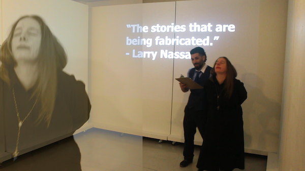
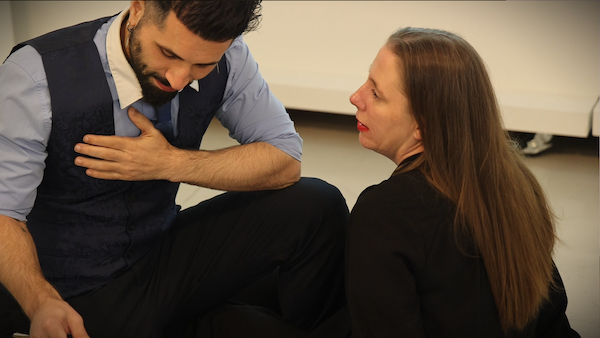
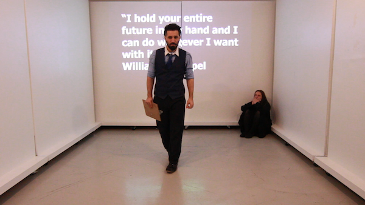

Act 4
Measured Misconduct: Angelo, Harvey, Larry, et al.
Amy Piwowarski
With y nishizawa (camera) & Paul LaTorre (actor)
“From Shakespeare’s Measure for Measure” Act 2, Scene 2
“From Shakespeare’s Measure for Measure” Act 2, Scene 4
Director’s Note
- Embodied Rhetorics: Viewers should watch for how this Act’s blocking (the way a body moves and interacts with people and objects in a theatrical space) is contrary to what the character Isabella (played by Piwowarski) in Shakespeare’s Measure for Measure says. Notice the tension between Isabella’s dialogue of resistance versus her bodily compliance.
- Performing CDA: Specifically, look at how this blocking reflects the language of sexual assault deniers: patterns that deflect responsibility, create ambiguity, and cast women as powerful sexual agents, despite the coercive and subordinate contexts surrounding them. Notice the specific utterances projected onto the walls, shaping Isabella’s movements even as her Shakespearean dialogue pushes back against her perpetrator.
- Boal Connection: Viewers should take note of a specific Boal connection here: audience intervention—or what he terms the participation in a theatrical event of “Spect-Actors.” The filmed ending of Act 2, Scene 4 in Measured Misconduct incorporated audience interventions and suggestions from a 2024 performance, where the spectators at Piwowarski’s undergraduate capstone event helped stage Isabella’s final movements.
Content Warning: The performers in this Act’s accompanying videos enact the language of sexual assault and coercion. It includes projected excerpts from real statements made by men convicted of sexual assault or accused of misconduct. The blocking is designed to visually and physically evoke this language. Viewer discretion is advised.
Artist Statement
Measure for Measure is one of Shakespeare’s lesser-known and less frequently performed plays, yet it feels newly urgent in the wake of the #MeToo movement and the wave of sexual assault convictions since 2017. Its focus on power, coercion, and sexual misconduct—particularly through the antagonist Angelo’s evasive rhetoric and victim blaming—feels unsettlingly familiar in today’s socio-political climate.
This summary indicates why:
The Duke of Vienna, a morally ambivalent figure, leaves the city and appoints his stern deputy, Angelo, to rule. Though the Duke has long ignored morality laws—evidenced by the bawds—Angelo swiftly enforces them, sentencing the young Claudio to death for impregnating his fiancée. Claudio’s sister Isabella, a novice nun, begs for mercy. Aroused by her chastity and rhetoric, Angelo proposes to spare Claudio if she sleeps with him. Disguised as a friar, the Duke secretly intervenes, arranging for Angelo to sleep with his former fiancée, Mariana, whom he abandoned after she lost her dowry. As Isabella prepares to reveal Angelo’s coercion, the duke unmasks himself, restores order, and compels Angelo to marry Mariana. Claudio is pardoned. The Duke then proposes to Isabella who, tellingly, remains silent

For my final undergraduate class, I directed scenes from Measure for Measure in a Shakespeare showcase focusing on Angelo’s slippery rhetoric. Later, I collaborated with Paul LaTorre (as Angelo) and y nishizawa (on camera) to restage the scenes with a CDRP focus. We aimed to choreograph our movements around the syntax and grammar of sexual coercion, performing in a white cube-like set we built in the college gallery. Contemporary utterances reflecting the linguistics of sexual coercion, paralleling Angelo’s rhetoric, were projected throughout the space.
To do this, I compiled a small corpus of utterances from men in positions of power who had either been convicted of sexual assault, admitted to misconduct, or, like Judge Derek Johnson, were publicly reprimanded for comments he made during the sentencing of a convicted rapist.[1] I then analyzed these statements to identify the syntactic and grammatical structures used to minimize or deflect responsibility for the men’s actions.
My analysis of this small corpus revealed several recurring rhetorical strategies:
- First Person Pronouns: These were employed when foregrounding virtues, denying accusations, offering non-admitting apologies, claiming misunderstandings, emphasizing personal perspectives, or highlighting past virtues.
- Deflection of Responsibility: The men employed grammatical structures that minimized their direct involvement in the actions. For instance, they used passive voice to obscure responsibility, intense adverbs to demonstrate their indignation, or other means to portray themselves as victims of circumstances rather than active perpetrators.
- Women as Agents of Power: Using conditional statements, the men misrepresented sexual power dynamics, attributing agency to their victims. Other tactics often portrayed women as manipulative or angry, and men as unable to control themselves, suggesting that their misconduct was natural or inevitable.
- Temporal Evasion: The men employed temporal re-contextualization to distance themselves from their actions, often by years, implying personal change and outdated social norms to evade current responsibility.
- Legal Posturing: The men tried to detract from the seriousness of the accusations by evoking the law, minimizing or dismissing allegations that had not gone through the legal system. In addition, when they appealed to the law, they positioned themselves in allegiance with it, downplaying the experiences of the victims. They also constructed a position of authority, advising others on how to avoid legal consequences, reinforcing patriarchal power structures, and promoting a culture of denial and aggression.
- Ambiguity: The men hedged and were ambiguous, avoiding direct admissions of guilt while acknowledging the possibility of wrongdoing.
After analyzing these strategies, I found they align with Michelle Lazar’s concept of “gender-based ideologies,” which she describes in her work on feminist critical discourse analysis (FCDA) as “discourses that sustain a gendered social order in which some people, by virtue of being ’men,’ are accorded privileges systemically, and others, by virtue of being ’women,’ are routinely disadvantaged, excluded, and not taken seriously” (184; emphasis mine). What I termed our “villain’s corpus”—because their rhetoric so resembles Angelo’s—predominantly reflects attitudes that trivialize women’s experiences and perspectives, particularly in discourses surrounding sexual assault.
Once the key rhetorical patterns were identified, I paired selections from the corpus with Angelo and Isabella’s dialogue in two pivotal scenes—Measure for Measure, Act 2, Scenes 2 and 4.[2] Paul and I used these excerpts to reflect Angelo’s internal monologue. As we filmed, we projected the selected utterances onto the wall of our performance space while the characters spoke their lines, visually suggesting Angelo’s thoughts. We also used the syntax and grammar of the “villains” to stage our blocking, illustrating how both Angelo and Isabella might physically inhabit Angelo’s psychological space through these projections.[3]
Neither Paul nor I are professional actors; he is a poet and a professor, and I am a graduate student in applied linguistics, but we are both familiar with CDRP. Paul’s prior collaboration with Freddie Harris Ramsby on critical discourse analysis for the stage gave him a foundation for the unconventional task of “blocking” syntax and grammar. As the antagonist, it made more sense for Paul to embody the language from our corpus, given Angelo’s role as a man coercing a nun into sex. Still, he had to deliver Shakespeare’s lines while embodying how contemporary rhetoric might reflect Angelo’s inner thoughts in response to Isabella.

Blocking was more challenging for me. Isabella’s lines clearly convey resistance and growing horror at Angelo’s coercive rhetoric. Yet, we had to constantly remind ourselves that we were staging his language and the grammar of our villains’ corpus to reflect Angelo’s inner monologue. This required me to embody a passivelysexual presence, as if Isabella had been drugged by Angelo’s beliefs about their interaction and the villain’s syntax. As a result, my vocal register and physical movements became deliberately compliant, even though Isabella’s words resist throughout.
Watching myself as Isabella inhabit the projected language, drawn from the rhetoric of sexual perpetrators, was deeply disturbing. These utterances expose how such men syntactically and grammatically construct their relationships that distort consent. Onscreen, Isabella appears to viscerally enact Angelo’s perspective. At times, she seems drugged; at others, sexually assertive. Her body language consistently suggests desire for Angelo, even as her dialogue resists him, especially at the end of Act 2, Scene 4. The projections suggest otherwise, and, accordingly, so do her movements. Her decisions to succumb to him, dictated by the projections on the wall, appear to be of her own volition, rather than Angelo’s coercion.

As a team, we grappled with how to stage my physicality at the climax of Act 2, Scene 4. Shakespeare’s text has Isabella vehemently reject Angelo, yet our projections compelled her body to comply, reflecting the distorted sexual dynamics expressed in our corpus. To navigate this tension, we turned to Augusto Boal. In Theater of the Oppressed, Boal’s “Forum theater” invites spectators to intervene directly in the action (102). During an early performance in May 2024 (part of my undergraduate capstone), we invited audience input on the scene’s final moments. Two spectators offered suggestions for how I might move as Isabella in line with our villains’ utterances, even as she resists them verbally. Our film’s conclusion incorporates these suggestions as I navigate the lines between consent and coercion and expose how contemporary rhetoric can obscure agency and shift responsibility onto victims.
Final note: Our performance of CDRP consists of two 10-minute videos: Act 2, Scene 2 and Act 2, Scene 4. Viewers can select either one to watch independently or view both videos for a more comprehensive experience of our adaptation of Measure for Measure.
Works Cited
Boal, Augusto. Theatre of the Oppressed. Translated by Emily Fryer, 3rd ed., Pluto Press, 2008.
Lazar, Michelle. “Feminist Critical Discourse Analysis: Relevance for Current Gender and Language Research,” The Handbook of Language, Gender, and Sexuality, edited by Susan Ehrlich, Miriam Meyerhoff, Janet Holmes, Wiley, 2014, pp. 180-199.
Shakespeare, William. Measure for Measure. Edited by Barbara A. Mowat and Paul Werstine, Folger Shakespeare Library, Simon & Schuster, 2005.